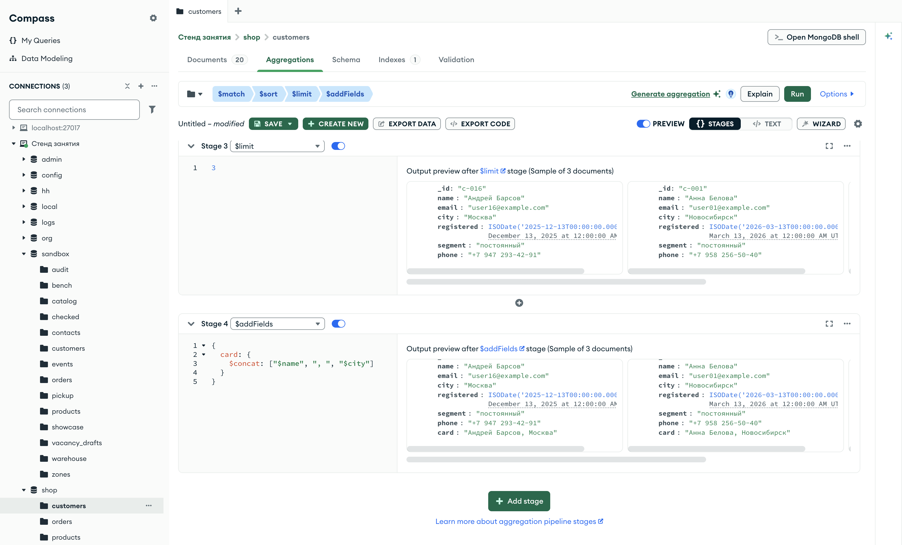

Справочник по MongoDB · модуль 4 · конвейер агрегации
4.3
$addFields, $set
и $unset
В этой главе разобраны стадии, которые меняют документ потока частично. $addFields добавляет к документу новые поля и сохраняет все остальные, $set — второе имя той же стадии, $unset убирает перечисленные поля. Отдельно разобраны поле с уже существующим именем, поле внутри вложенного документа и использование нового поля в следующих стадиях конвейера.
- Категория
- Агрегация
- Уровень
- Начальный
- Связанные темы
- Обновление и $set (глава 1.7), $project и выражения (глава 4.2), конвейер (глава 4.1)
- Зачем это знать
- Добавлять к документам вычисленные поля, не перечисляя всех остальных, и убирать из ответа лишнее
Как запускать примеры этой главы
mongodb-glava-4.3-python.zip, 64 КБmongodb-glava-4.3-ruby.zip, 63 КБmongodb-glava-4.3-go.zip, 70 КБmongodb-glava-4.3-cpp.zip, 70 КБ — все примеры главы готовыми программами, базы и стенд в Docker. В README.md — запуск в Docker, если Compass нет или он не подключается, и на установленном сервере с Compass, а также что должна напечатать каждая программа.lessons/ch4_3.py — пример вставляется в конец файлаlessons/ch4_3.rb — пример вставляется в конец файлаlessons/ch4_3.go — пример внутрь скобок в конце main, функции и типы — выше mainlessons/ch4_3.cpp — пример внутрь скобок в конце main, функции — выше maincd lessons, затем python ch4_3.pycd lessons, затем python3 ch4_3.py · в Docker: docker compose run --rm python lessons/ch4_3.pycd lessons, затем ruby ch4_3.rb · в Docker: docker compose run --rm ruby lessons/ch4_3.rbcd lessons, затем go run ch4_3.go · в Docker: docker compose run --rm go lessons/ch4_3.gocd lessons, затем g++ -std=c++17 ch4_3.cpp -o prog $(pkg-config --cflags --libs libmongocxx1) && ./prog · в Docker: docker compose run --rm cpp lessons/ch4_3.cpp§1Стадия $addFields
В главе 4.2 стадия $project собирала документ заново: в результат попадали только перечисленные поля. Часто нужно другое — оставить документ как есть и дописать к нему одно-два вычисленных поля. Перечислять ради этого все старые поля долго, а при появлении нового поля в коллекции проекцию пришлось бы править. Для такой задачи есть стадия $addFields.
Так секретарь ставит на заявление резолюцию: в углу листа появляется строка «Согласовано, 18.10», а текст заявления остаётся прежним. Заявление не переписывают, к нему только добавляют пометку.
Стадия $addFields добавляет к каждому документу потока поля, перечисленные в её параметре, и оставляет все остальные поля без изменений. Значение нового поля записывается так же, как в $project: путём к полю или выражением. Число документов стадия не меняет.
Пример берёт трёх постоянных покупателей из shop.customers в порядке имён и добавляет поле card — строку «имя, город» для карточки покупателя.
У стадии $addFields в mongocxx::pipeline есть свой метод — add_fields, параметр — документ новых полей.
pipeline = [
{"$match": {"segment": "постоянный"}},
{"$sort": {"name": 1}},
{"$limit": 3},
{"$addFields": {"card": {"$concat": ["$name", ", ", "$city"]}}},
]
for doc in customers.aggregate(pipeline):
print(doc)
mongocxx::pipeline pipeline; pipeline.match(make_document(kvp("segment", "постоянный"))); pipeline.sort(make_document(kvp("name", 1))); pipeline.limit(3); pipeline.add_fields(make_document( kvp("card", make_document(kvp("$concat", make_array("$name", ", ", "$city")))))); for (auto&& doc : customers.aggregate(pipeline)) { std::cout << bsoncxx::to_json(doc, bsoncxx::ExtendedJsonMode::k_relaxed) << std::endl; }
pipeline := mongo.Pipeline{
{{Key: "$match", Value: bson.D{{Key: "segment", Value: "постоянный"}}}},
{{Key: "$sort", Value: bson.D{{Key: "name", Value: 1}}}},
{{Key: "$limit", Value: 3}},
{{Key: "$addFields", Value: bson.D{
{Key: "card", Value: bson.D{{Key: "$concat", Value: bson.A{"$name", ", ", "$city"}}}}}}},
}
cursor, _ := customers.Aggregate(ctx, pipeline)
for cursor.Next(ctx) {
var doc bson.D
cursor.Decode(&doc)
out, _ := bson.MarshalExtJSON(doc, false, false)
fmt.Println(string(out))
}
pipeline = [
{ "$match" => { "segment" => "постоянный" } },
{ "$sort" => { "name" => 1 } },
{ "$limit" => 3 },
{ "$addFields" => { "card" => { "$concat" => ["$name", ", ", "$city"] } } },
]
customers.aggregate(pipeline).each { |doc| puts doc.inspect }
{'_id': 'c-016', 'name': 'Андрей Барсов', 'email': 'user16@example.com', 'city': 'Москва', 'registered': datetime.datetime(2025, 12, 13, 0, 0), 'segment': 'постоянный', 'phone': '+7 947 293-42-91', 'card': 'Андрей Барсов, Москва'}
{'_id': 'c-001', 'name': 'Анна Белова', 'email': 'user01@example.com', 'city': 'Новосибирск', 'registered': datetime.datetime(2026, 3, 13, 0, 0), 'segment': 'постоянный', 'phone': '+7 958 256-50-40', 'card': 'Анна Белова, Новосибирск'}
{'_id': 'c-013', 'name': 'Вера Панина', 'email': 'user13@example.com', 'city': 'Москва', 'registered': datetime.datetime(2025, 12, 3, 0, 0), 'segment': 'постоянный', 'phone': '+7 993 596-76-99', 'card': 'Вера Панина, Москва'}
{ "_id" : "c-016", "name" : "Андрей Барсов", "email" : "user16@example.com", "city" : "Москва", "registered" : { "$date" : "2025-12-13T00:00:00Z" }, "segment" : "постоянный", "phone" : "+7 947 293-42-91", "card" : "Андрей Барсов, Москва" }
{ "_id" : "c-001", "name" : "Анна Белова", "email" : "user01@example.com", "city" : "Новосибирск", "registered" : { "$date" : "2026-03-13T00:00:00Z" }, "segment" : "постоянный", "phone" : "+7 958 256-50-40", "card" : "Анна Белова, Новосибирск" }
{ "_id" : "c-013", "name" : "Вера Панина", "email" : "user13@example.com", "city" : "Москва", "registered" : { "$date" : "2025-12-03T00:00:00Z" }, "segment" : "постоянный", "phone" : "+7 993 596-76-99", "card" : "Вера Панина, Москва" }
{"_id":"c-016","name":"Андрей Барсов","email":"user16@example.com","city":"Москва","registered":{"$date":"2025-12-13T00:00:00Z"},"segment":"постоянный","phone":"+7 947 293-42-91","card":"Андрей Барсов, Москва"}
{"_id":"c-001","name":"Анна Белова","email":"user01@example.com","city":"Новосибирск","registered":{"$date":"2026-03-13T00:00:00Z"},"segment":"постоянный","phone":"+7 958 256-50-40","card":"Анна Белова, Новосибирск"}
{"_id":"c-013","name":"Вера Панина","email":"user13@example.com","city":"Москва","registered":{"$date":"2025-12-03T00:00:00Z"},"segment":"постоянный","phone":"+7 993 596-76-99","card":"Вера Панина, Москва"}
{"_id"=>"c-016", "name"=>"Андрей Барсов", "email"=>"user16@example.com", "city"=>"Москва", "registered"=>2025-12-13 00:00:00 UTC, "segment"=>"постоянный", "phone"=>"+7 947 293-42-91", "card"=>"Андрей Барсов, Москва"}
{"_id"=>"c-001", "name"=>"Анна Белова", "email"=>"user01@example.com", "city"=>"Новосибирск", "registered"=>2026-03-13 00:00:00 UTC, "segment"=>"постоянный", "phone"=>"+7 958 256-50-40", "card"=>"Анна Белова, Новосибирск"}
{"_id"=>"c-013", "name"=>"Вера Панина", "email"=>"user13@example.com", "city"=>"Москва", "registered"=>2025-12-03 00:00:00 UTC, "segment"=>"постоянный", "phone"=>"+7 993 596-76-99", "card"=>"Вера Панина, Москва"}
У каждого покупателя остались все семь полей документа, и восьмым добавилось card. На схеме — документ Андрея Барсова до стадии и после неё.
Белые поля перешли из входного документа без изменений, зелёное добавлено стадией. Новое поле встаёт в конец документа.
Новое поле получилось тем же выражением $concat, что в главе 4.2. Разница между двумя стадиями — в том, что происходит с остальными полями. Её видно, если поставить одно выражение в обе стадии.
§2$addFields и $project
Справка из отдела кадров в главе 4.2 была отдельным листом с тремя графами. Резолюция из §1 — пометка на целом заявлении. Обе содержат новую информацию, но справка заменяет документ, а резолюция дополняет его.
Пример выполняет тот же конвейер, что в §1, но последней стадией ставит $project с тем же полем card.
pipeline = [
{"$match": {"segment": "постоянный"}},
{"$sort": {"name": 1}},
{"$limit": 3},
{"$project": {"card": {"$concat": ["$name", ", ", "$city"]}}},
]
for doc in customers.aggregate(pipeline):
print(doc)
mongocxx::pipeline pipeline; pipeline.match(make_document(kvp("segment", "постоянный"))); pipeline.sort(make_document(kvp("name", 1))); pipeline.limit(3); pipeline.project(make_document( kvp("card", make_document(kvp("$concat", make_array("$name", ", ", "$city")))))); for (auto&& doc : customers.aggregate(pipeline)) { std::cout << bsoncxx::to_json(doc, bsoncxx::ExtendedJsonMode::k_relaxed) << std::endl; }
pipeline := mongo.Pipeline{
{{Key: "$match", Value: bson.D{{Key: "segment", Value: "постоянный"}}}},
{{Key: "$sort", Value: bson.D{{Key: "name", Value: 1}}}},
{{Key: "$limit", Value: 3}},
{{Key: "$project", Value: bson.D{
{Key: "card", Value: bson.D{{Key: "$concat", Value: bson.A{"$name", ", ", "$city"}}}}}}},
}
cursor, _ := customers.Aggregate(ctx, pipeline)
for cursor.Next(ctx) {
var doc bson.D
cursor.Decode(&doc)
out, _ := bson.MarshalExtJSON(doc, false, false)
fmt.Println(string(out))
}
pipeline = [
{ "$match" => { "segment" => "постоянный" } },
{ "$sort" => { "name" => 1 } },
{ "$limit" => 3 },
{ "$project" => { "card" => { "$concat" => ["$name", ", ", "$city"] } } },
]
customers.aggregate(pipeline).each { |doc| puts doc.inspect }
{'_id': 'c-016', 'card': 'Андрей Барсов, Москва'}
{'_id': 'c-001', 'card': 'Анна Белова, Новосибирск'}
{'_id': 'c-013', 'card': 'Вера Панина, Москва'}
{ "_id" : "c-016", "card" : "Андрей Барсов, Москва" }
{ "_id" : "c-001", "card" : "Анна Белова, Новосибирск" }
{ "_id" : "c-013", "card" : "Вера Панина, Москва" }
{"_id":"c-016","card":"Андрей Барсов, Москва"}
{"_id":"c-001","card":"Анна Белова, Новосибирск"}
{"_id":"c-013","card":"Вера Панина, Москва"}
{"_id"=>"c-016", "card"=>"Андрей Барсов, Москва"}
{"_id"=>"c-001", "card"=>"Анна Белова, Новосибирск"}
{"_id"=>"c-013", "card"=>"Вера Панина, Москва"}
После $project у каждого покупателя два поля: _id, который проекция оставляет сама, и card. Имя, почта, город и остальные поля в результат не попали, потому что в проекции они не перечислены.
Зелёным выделено поле, которое вычислила стадия. $addFields добавляет его к восьми полям документа, $project оставляет только его и _id.
Отсюда правило выбора. Когда нужен документ целиком и ещё несколько вычисленных полей, ставят $addFields. Когда нужен ответ из нескольких полей, ставят $project. Новое поле может получить и имя, которое в документе уже есть.
§3Поле с существующим именем
Перед распродажей менеджер берёт копию прайс-листа и в графе «Цена» зачёркивает старые цены, вписывая новые. В копии теперь новые цены, а прайс-лист в папке остался прежним.
Если имя поля в $addFields совпадает с именем поля документа, стадия заменяет его значение. Пример записывает в поле price ноутбуков цену со скидкой 10 % и печатает результат функцией show из главы 4.1: товар целиком занимает много строк. Затем пример читает цену MacBook Air 13 прямо из коллекции.
Метод find_one из главы 1.4 возвращает первый подходящий документ коллекции словарём, и ["price"] берёт из него цену.
Вызов find(…).first возвращает первый подходящий документ коллекции хешем, и ["price"] берёт из него цену.
Метод FindOne находит первый подходящий документ коллекции, Decode записывает его в переменную stored типа bson.M — словарь «имя поля — значение». stored["price"] — цена.
Метод find_one возвращает необязательное значение: документ или ничего. Стрелка ->view() даёт доступ к найденному документу, ["price"].get_int32().value — цена, записанная в коллекции целым числом.
pipeline = [
{"$match": {"category": "ноутбуки"}},
{"$sort": {"price": -1}},
{"$addFields": {"price": {"$multiply": ["$price", 0.9]}}},
]
show(products.aggregate(pipeline), "title", "price")
print("в коллекции:", products.find_one({"title": "Ноутбук Apple MacBook Air 13"})["price"])
mongocxx::pipeline pipeline; pipeline.match(make_document(kvp("category", "ноутбуки"))); pipeline.sort(make_document(kvp("price", -1))); pipeline.add_fields(make_document( kvp("price", make_document(kvp("$multiply", make_array("$price", 0.9)))))); show(products.aggregate(pipeline), {"title", "price"}); auto stored = products.find_one(make_document(kvp("title", "Ноутбук Apple MacBook Air 13"))); std::cout << "в коллекции: " << stored->view()["price"].get_int32().value << std::endl;
pipeline := mongo.Pipeline{
{{Key: "$match", Value: bson.D{{Key: "category", Value: "ноутбуки"}}}},
{{Key: "$sort", Value: bson.D{{Key: "price", Value: -1}}}},
{{Key: "$addFields", Value: bson.D{
{Key: "price", Value: bson.D{{Key: "$multiply", Value: bson.A{"$price", 0.9}}}}}}},
}
cursor, _ := products.Aggregate(ctx, pipeline)
show(cursor, "title", "price")
var stored bson.M
products.FindOne(ctx, bson.D{{Key: "title", Value: "Ноутбук Apple MacBook Air 13"}}).Decode(&stored)
fmt.Println("в коллекции:", stored["price"])
pipeline = [
{ "$match" => { "category" => "ноутбуки" } },
{ "$sort" => { "price" => -1 } },
{ "$addFields" => { "price" => { "$multiply" => ["$price", 0.9] } } },
]
show(products.aggregate(pipeline), "title", "price")
puts "в коллекции: #{products.find({ "title" => "Ноутбук Apple MacBook Air 13" }).first["price"]}"
Ноутбук Apple MacBook Air 13 | 103491.0 Ноутбук Acer Nitro V15 | 80991.0 Ноутбук HP Pavilion 14 | 61110.0 Ноутбук ASUS VivoBook 15 | 46341.0 Ноутбук Lenovo IdeaPad 3 | 38691.0 документов: 5 в коллекции: 114990
Ноутбук Apple MacBook Air 13 | 103491 Ноутбук Acer Nitro V15 | 80991 Ноутбук HP Pavilion 14 | 61110 Ноутбук ASUS VivoBook 15 | 46341 Ноутбук Lenovo IdeaPad 3 | 38691 документов: 5 в коллекции: 114990
Ноутбук Apple MacBook Air 13 | 103491 Ноутбук Acer Nitro V15 | 80991 Ноутбук HP Pavilion 14 | 61110 Ноутбук ASUS VivoBook 15 | 46341 Ноутбук Lenovo IdeaPad 3 | 38691 документов: 5 в коллекции: 114990
Ноутбук Apple MacBook Air 13 | 103491.0 Ноутбук Acer Nitro V15 | 80991.0 Ноутбук HP Pavilion 14 | 61110.0 Ноутбук ASUS VivoBook 15 | 46341.0 Ноутбук Lenovo IdeaPad 3 | 38691.0 документов: 5 в коллекции: 114990
В результате конвейера в поле price — цены со скидкой, например 103491 у MacBook Air 13. В коллекции у того же ноутбука по-прежнему 114990. Стадия $addFields меняет документы в потоке, а документы в коллекции остаются нетронутыми.
price: 114990не меняется"price": {"$multiply": ["$price", 0.9]}стадия 3price: 103491.0потокВыражение читает старое значение "$price" и записывает новое в поле с тем же именем. Следующие стадии получают уже новое значение.
Старое значение после такой стадии в потоке недоступно. Если оно ещё понадобится, новое значение кладут в поле с другим именем, например sale. Замена значения работает и для поля внутри вложенного документа.
§4Поле во вложенном документе
Почтальон дописывает на конверт номер своего участка рядом с адресом. Город, улица и дом в адресе остаются на месте, к ним добавляется ещё одна строка.
Имя поля в $addFields может быть записано через точку: "delivery.fast". Тогда новое поле появляется внутри вложенного документа delivery, а его остальные поля сохраняются. Пример добавляет трём заказам в пути признак быстрой доставки: true, если срок не больше двух дней.
pipeline = [
{"$match": {"status": "в пути"}},
{"$sort": {"total": -1}},
{"$limit": 3},
{"$addFields": {"delivery.fast": {"$lte": ["$delivery.days", 2]}}},
]
show(orders.aggregate(pipeline), "number", "delivery.city", "delivery.type", "delivery.days", "delivery.fast")
mongocxx::pipeline pipeline; pipeline.match(make_document(kvp("status", "в пути"))); pipeline.sort(make_document(kvp("total", -1))); pipeline.limit(3); pipeline.add_fields(make_document( kvp("delivery.fast", make_document(kvp("$lte", make_array("$delivery.days", 2)))))); show(orders.aggregate(pipeline), {"number", "delivery.city", "delivery.type", "delivery.days", "delivery.fast"});
pipeline := mongo.Pipeline{
{{Key: "$match", Value: bson.D{{Key: "status", Value: "в пути"}}}},
{{Key: "$sort", Value: bson.D{{Key: "total", Value: -1}}}},
{{Key: "$limit", Value: 3}},
{{Key: "$addFields", Value: bson.D{
{Key: "delivery.fast", Value: bson.D{{Key: "$lte", Value: bson.A{"$delivery.days", 2}}}}}}},
}
cursor, _ := orders.Aggregate(ctx, pipeline)
show(cursor, "number", "delivery.city", "delivery.type", "delivery.days", "delivery.fast")
pipeline = [
{ "$match" => { "status" => "в пути" } },
{ "$sort" => { "total" => -1 } },
{ "$limit" => 3 },
{ "$addFields" => { "delivery.fast" => { "$lte" => ["$delivery.days", 2] } } },
]
show(orders.aggregate(pipeline), "number", "delivery.city", "delivery.type", "delivery.days", "delivery.fast")
2026-0028 | Екатеринбург | пункт выдачи | 1 | true 2026-0085 | Новосибирск | почта | 9 | false 2026-0025 | Екатеринбург | пункт выдачи | 4 | false документов: 3
2026-0028 | Екатеринбург | пункт выдачи | 1 | true 2026-0085 | Новосибирск | почта | 9 | false 2026-0025 | Екатеринбург | пункт выдачи | 4 | false документов: 3
2026-0028 | Екатеринбург | пункт выдачи | 1 | true 2026-0085 | Новосибирск | почта | 9 | false 2026-0025 | Екатеринбург | пункт выдачи | 4 | false документов: 3
2026-0028 | Екатеринбург | пункт выдачи | 1 | true 2026-0085 | Новосибирск | почта | 9 | false 2026-0025 | Екатеринбург | пункт выдачи | 4 | false документов: 3
У каждого заказа в delivery остались город, способ и срок доставки, и добавилось поле fast. У заказа 2026-0028 срок 1 день, и fast равно true. У двух других сроки 9 и 4 дня, и fast равно false.
Точечная запись в $addFields дописывает поле во вложенный документ. В $project та же запись оставляла во вложенном документе только названное поле.
Новые поля пригодны не только для вывода. Следующие стадии конвейера получают их наравне с полями из коллекции.
§5Новое поле в следующих стадиях
В ведомости сначала считают итоговую оценку каждого студента и записывают её в отдельную графу. Затем по этой графе отбирают отличников и сортируют список. Отбор идёт по графе, которой в исходных оценках не было.
Поле, добавленное стадией $addFields, есть у документов во всех следующих стадиях. По нему можно отбирать документы в $match и сортировать в $sort. Пример находит три самых дорогих товара, которые со скидкой 10 % стоят меньше 30 000.
pipeline = [
{"$addFields": {"sale": {"$multiply": ["$price", 0.9]}}},
{"$match": {"sale": {"$lt": 30000}}},
{"$sort": {"sale": -1}},
{"$limit": 3},
]
show(products.aggregate(pipeline), "title", "price", "sale")
mongocxx::pipeline pipeline; pipeline.add_fields(make_document( kvp("sale", make_document(kvp("$multiply", make_array("$price", 0.9)))))); pipeline.match(make_document(kvp("sale", make_document(kvp("$lt", 30000))))); pipeline.sort(make_document(kvp("sale", -1))); pipeline.limit(3); show(products.aggregate(pipeline), {"title", "price", "sale"});
pipeline := mongo.Pipeline{
{{Key: "$addFields", Value: bson.D{
{Key: "sale", Value: bson.D{{Key: "$multiply", Value: bson.A{"$price", 0.9}}}}}}},
{{Key: "$match", Value: bson.D{{Key: "sale", Value: bson.D{{Key: "$lt", Value: 30000}}}}}},
{{Key: "$sort", Value: bson.D{{Key: "sale", Value: -1}}}},
{{Key: "$limit", Value: 3}},
}
cursor, _ := products.Aggregate(ctx, pipeline)
show(cursor, "title", "price", "sale")
pipeline = [
{ "$addFields" => { "sale" => { "$multiply" => ["$price", 0.9] } } },
{ "$match" => { "sale" => { "$lt" => 30000 } } },
{ "$sort" => { "sale" => -1 } },
{ "$limit" => 3 },
]
show(products.aggregate(pipeline), "title", "price", "sale")
Смартфон Samsung Galaxy A55 | 32990 | 29691.0 Смартфон realme 12 Pro | 27490 | 24741.0 Монитор Dell P2422H | 21990 | 19791.0 документов: 3
Смартфон Samsung Galaxy A55 | 32990 | 29691 Смартфон realme 12 Pro | 27490 | 24741 Монитор Dell P2422H | 21990 | 19791 документов: 3
Смартфон Samsung Galaxy A55 | 32990 | 29691 Смартфон realme 12 Pro | 27490 | 24741 Монитор Dell P2422H | 21990 | 19791 документов: 3
Смартфон Samsung Galaxy A55 | 32990 | 29691.0 Смартфон realme 12 Pro | 27490 | 24741.0 Монитор Dell P2422H | 21990 | 19791.0 документов: 3
Первым в результате стоит Samsung Galaxy A55: его цена 32 990 выше порога, а цена со скидкой 29 691 ниже. Условие $match проверяет новое поле sale, цена из коллекции в отборе не участвует.
$addFields и $sort не меняют число документов. Условию sale < 30000 подходят 13 товаров из 21, предел оставляет три самых дорогих из них.
Числа 21 и 13 посчитаны на стенде тем же конвейером без последних стадий, как в примере главы 4.1, §3. У стадии $addFields есть второе имя, и этот же конвейер можно записать с ним.
§6$set — второе имя $addFields
В MongoDB 4.2 у стадии $addFields появилось второе имя — $set. Это одна и та же стадия: параметр записывается так же, результат тот же. Пример повторяет конвейер из §5, заменив $addFields на $set.
Для стадии $set в mongocxx::pipeline своего метода нет, поэтому она добавляется методом append_stage — документом стадии целиком.
pipeline = [
{"$set": {"sale": {"$multiply": ["$price", 0.9]}}},
{"$match": {"sale": {"$lt": 30000}}},
{"$sort": {"sale": -1}},
{"$limit": 3},
]
show(products.aggregate(pipeline), "title", "price", "sale")
mongocxx::pipeline pipeline; pipeline.append_stage(make_document(kvp("$set", make_document( kvp("sale", make_document(kvp("$multiply", make_array("$price", 0.9)))))))); pipeline.match(make_document(kvp("sale", make_document(kvp("$lt", 30000))))); pipeline.sort(make_document(kvp("sale", -1))); pipeline.limit(3); show(products.aggregate(pipeline), {"title", "price", "sale"});
pipeline := mongo.Pipeline{
{{Key: "$set", Value: bson.D{
{Key: "sale", Value: bson.D{{Key: "$multiply", Value: bson.A{"$price", 0.9}}}}}}},
{{Key: "$match", Value: bson.D{{Key: "sale", Value: bson.D{{Key: "$lt", Value: 30000}}}}}},
{{Key: "$sort", Value: bson.D{{Key: "sale", Value: -1}}}},
{{Key: "$limit", Value: 3}},
}
cursor, _ := products.Aggregate(ctx, pipeline)
show(cursor, "title", "price", "sale")
pipeline = [
{ "$set" => { "sale" => { "$multiply" => ["$price", 0.9] } } },
{ "$match" => { "sale" => { "$lt" => 30000 } } },
{ "$sort" => { "sale" => -1 } },
{ "$limit" => 3 },
]
show(products.aggregate(pipeline), "title", "price", "sale")
Смартфон Samsung Galaxy A55 | 32990 | 29691.0 Смартфон realme 12 Pro | 27490 | 24741.0 Монитор Dell P2422H | 21990 | 19791.0 документов: 3
Смартфон Samsung Galaxy A55 | 32990 | 29691 Смартфон realme 12 Pro | 27490 | 24741 Монитор Dell P2422H | 21990 | 19791 документов: 3
Смартфон Samsung Galaxy A55 | 32990 | 29691 Смартфон realme 12 Pro | 27490 | 24741 Монитор Dell P2422H | 21990 | 19791 документов: 3
Смартфон Samsung Galaxy A55 | 32990 | 29691.0 Смартфон realme 12 Pro | 27490 | 24741.0 Монитор Dell P2422H | 21990 | 19791.0 документов: 3
Вывод совпадает с выводом §5 строка в строку. Имя $set выбрано по аналогии с оператором обновления $set из главы 1.7: оба записывают значение в поле. Действуют они в разных местах.
Стадия $set | Оператор $set | |
|---|---|---|
| Где пишется | в конвейере: aggregate([…, {"$set": {…}}]) | в обновлении: update_one(фильтр, {"$set": {…}}) |
| Что меняет | документы в потоке | документы в коллекции |
| Значение поля | путь к полю или выражение | значение, записанное в запросе |
В книге дальше используется имя $addFields: по нему сразу видно, что стадия добавляет поля. Для обратной задачи — убрать поля — есть отдельная стадия.
§7Стадия $unset
Перед тем как отдать список покупателей курьерской службе, из копии вычёркивают телефоны и почту: курьеру нужны имя и город. Остальные графы остаются на месте.
Стадия $unset убирает из каждого документа потока перечисленные поля и оставляет остальные. Параметр — имя поля строкой или список имён: {"$unset": ["phone", "email"]}. Вложенное поле указывается через точку. Поле, которого в документе нет, стадия пропускает без ошибки.
Пример убирает у трёх постоянных покупателей телефон и почту.
pipeline = [
{"$match": {"segment": "постоянный"}},
{"$sort": {"name": 1}},
{"$limit": 3},
{"$unset": ["phone", "email"]},
]
for doc in customers.aggregate(pipeline):
print(doc)
mongocxx::pipeline pipeline; pipeline.match(make_document(kvp("segment", "постоянный"))); pipeline.sort(make_document(kvp("name", 1))); pipeline.limit(3); pipeline.append_stage(make_document(kvp("$unset", make_array("phone", "email")))); for (auto&& doc : customers.aggregate(pipeline)) { std::cout << bsoncxx::to_json(doc, bsoncxx::ExtendedJsonMode::k_relaxed) << std::endl; }
pipeline := mongo.Pipeline{
{{Key: "$match", Value: bson.D{{Key: "segment", Value: "постоянный"}}}},
{{Key: "$sort", Value: bson.D{{Key: "name", Value: 1}}}},
{{Key: "$limit", Value: 3}},
{{Key: "$unset", Value: bson.A{"phone", "email"}}},
}
cursor, _ := customers.Aggregate(ctx, pipeline)
for cursor.Next(ctx) {
var doc bson.D
cursor.Decode(&doc)
out, _ := bson.MarshalExtJSON(doc, false, false)
fmt.Println(string(out))
}
pipeline = [
{ "$match" => { "segment" => "постоянный" } },
{ "$sort" => { "name" => 1 } },
{ "$limit" => 3 },
{ "$unset" => ["phone", "email"] },
]
customers.aggregate(pipeline).each { |doc| puts doc.inspect }
{'_id': 'c-016', 'name': 'Андрей Барсов', 'city': 'Москва', 'registered': datetime.datetime(2025, 12, 13, 0, 0), 'segment': 'постоянный'}
{'_id': 'c-001', 'name': 'Анна Белова', 'city': 'Новосибирск', 'registered': datetime.datetime(2026, 3, 13, 0, 0), 'segment': 'постоянный'}
{'_id': 'c-013', 'name': 'Вера Панина', 'city': 'Москва', 'registered': datetime.datetime(2025, 12, 3, 0, 0), 'segment': 'постоянный'}
{ "_id" : "c-016", "name" : "Андрей Барсов", "city" : "Москва", "registered" : { "$date" : "2025-12-13T00:00:00Z" }, "segment" : "постоянный" }
{ "_id" : "c-001", "name" : "Анна Белова", "city" : "Новосибирск", "registered" : { "$date" : "2026-03-13T00:00:00Z" }, "segment" : "постоянный" }
{ "_id" : "c-013", "name" : "Вера Панина", "city" : "Москва", "registered" : { "$date" : "2025-12-03T00:00:00Z" }, "segment" : "постоянный" }
{"_id":"c-016","name":"Андрей Барсов","city":"Москва","registered":{"$date":"2025-12-13T00:00:00Z"},"segment":"постоянный"}
{"_id":"c-001","name":"Анна Белова","city":"Новосибирск","registered":{"$date":"2026-03-13T00:00:00Z"},"segment":"постоянный"}
{"_id":"c-013","name":"Вера Панина","city":"Москва","registered":{"$date":"2025-12-03T00:00:00Z"},"segment":"постоянный"}
{"_id"=>"c-016", "name"=>"Андрей Барсов", "city"=>"Москва", "registered"=>2025-12-13 00:00:00 UTC, "segment"=>"постоянный"}
{"_id"=>"c-001", "name"=>"Анна Белова", "city"=>"Новосибирск", "registered"=>2026-03-13 00:00:00 UTC, "segment"=>"постоянный"}
{"_id"=>"c-013", "name"=>"Вера Панина", "city"=>"Москва", "registered"=>2025-12-03 00:00:00 UTC, "segment"=>"постоянный"}
У покупателей осталось пять полей: _id, имя, город, дата регистрации и сегмент. Тот же результат даёт исключающая проекция {"$project": {"phone": 0, "email": 0}} из главы 4.2. Запись $unset короче и сразу читается как «убрать».
Красным выделены поля, которые стадия убрала. Остальные пять полей перешли без изменений и в том же порядке.
В проекции поле убирается значением 0. В стадии $addFields то же значение работает иначе.
§8Ноль в $addFields
В стадии $project значения 1 и 0 означают «включить» и «исключить». В стадии $addFields у них нет особого смысла: число записывается в поле как значение. Пример ставит "phone": 0 в $addFields.
pipeline = [
{"$match": {"segment": "постоянный"}},
{"$sort": {"name": 1}},
{"$limit": 3},
{"$addFields": {"phone": 0}},
]
for doc in customers.aggregate(pipeline):
print(doc)
mongocxx::pipeline pipeline; pipeline.match(make_document(kvp("segment", "постоянный"))); pipeline.sort(make_document(kvp("name", 1))); pipeline.limit(3); pipeline.add_fields(make_document(kvp("phone", 0))); for (auto&& doc : customers.aggregate(pipeline)) { std::cout << bsoncxx::to_json(doc, bsoncxx::ExtendedJsonMode::k_relaxed) << std::endl; }
pipeline := mongo.Pipeline{
{{Key: "$match", Value: bson.D{{Key: "segment", Value: "постоянный"}}}},
{{Key: "$sort", Value: bson.D{{Key: "name", Value: 1}}}},
{{Key: "$limit", Value: 3}},
{{Key: "$addFields", Value: bson.D{{Key: "phone", Value: 0}}}},
}
cursor, _ := customers.Aggregate(ctx, pipeline)
for cursor.Next(ctx) {
var doc bson.D
cursor.Decode(&doc)
out, _ := bson.MarshalExtJSON(doc, false, false)
fmt.Println(string(out))
}
pipeline = [
{ "$match" => { "segment" => "постоянный" } },
{ "$sort" => { "name" => 1 } },
{ "$limit" => 3 },
{ "$addFields" => { "phone" => 0 } },
]
customers.aggregate(pipeline).each { |doc| puts doc.inspect }
{'_id': 'c-016', 'name': 'Андрей Барсов', 'email': 'user16@example.com', 'city': 'Москва', 'registered': datetime.datetime(2025, 12, 13, 0, 0), 'segment': 'постоянный', 'phone': 0}
{'_id': 'c-001', 'name': 'Анна Белова', 'email': 'user01@example.com', 'city': 'Новосибирск', 'registered': datetime.datetime(2026, 3, 13, 0, 0), 'segment': 'постоянный', 'phone': 0}
{'_id': 'c-013', 'name': 'Вера Панина', 'email': 'user13@example.com', 'city': 'Москва', 'registered': datetime.datetime(2025, 12, 3, 0, 0), 'segment': 'постоянный', 'phone': 0}
{ "_id" : "c-016", "name" : "Андрей Барсов", "email" : "user16@example.com", "city" : "Москва", "registered" : { "$date" : "2025-12-13T00:00:00Z" }, "segment" : "постоянный", "phone" : 0 }
{ "_id" : "c-001", "name" : "Анна Белова", "email" : "user01@example.com", "city" : "Новосибирск", "registered" : { "$date" : "2026-03-13T00:00:00Z" }, "segment" : "постоянный", "phone" : 0 }
{ "_id" : "c-013", "name" : "Вера Панина", "email" : "user13@example.com", "city" : "Москва", "registered" : { "$date" : "2025-12-03T00:00:00Z" }, "segment" : "постоянный", "phone" : 0 }
{"_id":"c-016","name":"Андрей Барсов","email":"user16@example.com","city":"Москва","registered":{"$date":"2025-12-13T00:00:00Z"},"segment":"постоянный","phone":0}
{"_id":"c-001","name":"Анна Белова","email":"user01@example.com","city":"Новосибирск","registered":{"$date":"2026-03-13T00:00:00Z"},"segment":"постоянный","phone":0}
{"_id":"c-013","name":"Вера Панина","email":"user13@example.com","city":"Москва","registered":{"$date":"2025-12-03T00:00:00Z"},"segment":"постоянный","phone":0}
{"_id"=>"c-016", "name"=>"Андрей Барсов", "email"=>"user16@example.com", "city"=>"Москва", "registered"=>2025-12-13 00:00:00 UTC, "segment"=>"постоянный", "phone"=>0}
{"_id"=>"c-001", "name"=>"Анна Белова", "email"=>"user01@example.com", "city"=>"Новосибирск", "registered"=>2026-03-13 00:00:00 UTC, "segment"=>"постоянный", "phone"=>0}
{"_id"=>"c-013", "name"=>"Вера Панина", "email"=>"user13@example.com", "city"=>"Москва", "registered"=>2025-12-03 00:00:00 UTC, "segment"=>"постоянный", "phone"=>0}
Телефон из документов не исчез: у всех трёх покупателей поле phone теперь равно 0. Сервер выполнил стадию без ошибки, поэтому по сообщениям сервера такую ошибку не заметить: её видно только в документах результата.
| Стадия | Что делает с полем phone |
|---|---|
{"$project": {"phone": 0}} | убирает поле, остальные оставляет |
{"$unset": "phone"} | убирает поле, остальные оставляет |
{"$addFields": {"phone": 0}} | записывает в поле число 0 |
Стадии этой главы собираются в Compass так же, как стадии глав 4.1 и 4.2.
§9$addFields в Compass
Стадия $addFields выбирается в поле оператора карточки, как $match и $project. На кадре — конвейер из §1: отбор постоянных покупателей, сортировка по имени, предел 3 и $addFields с полем card.

$limit и $addFields конвейера из §1Выборки двух соседних стадий отличаются одной строкой. После $limit у Андрея Барсова последнее поле — phone. После $addFields под ним появилось card: "Андрей Барсов, Москва", остальные поля те же. Карточки выборки на кадре прокручены вниз, чтобы последнее поле было видно.
§10Частые ошибки
| Что написано | Что происходит | Как правильно |
|---|---|---|
{"$addFields": {"phone": 0}} | Поле не удаляется: у каждого документа phone становится равным 0 | Убирать поля стадией {"$unset": ["phone"]} |
{"$addFields": {"price": {"$multiply": ["$price", 0.9]}}}, затем ожидание старой цены | Поле с тем же именем перезаписано: дальше по конвейеру цена уже со скидкой | Новое значение класть в поле с новым именем: sale |
$match по новому полю перед $addFields | Поля ещё нет, условию не подходит ни один документ | Сначала $addFields, затем $match по новому полю |
Ожидание, что $addFields изменит коллекцию | Меняются только документы в потоке; в коллекции значения прежние | Для изменения коллекции — update_one и update_many из главы 1.7 |
| Что написано | Что происходит | Как правильно |
|---|---|---|
{"$addFields": {"phone": 0}} | Поле не удаляется: у каждого документа phone становится равным 0 | Убирать поля стадией {"$unset": ["phone"]} |
{"$addFields": {"price": {"$multiply": ["$price", 0.9]}}}, затем ожидание старой цены | Поле с тем же именем перезаписано: дальше по конвейеру цена уже со скидкой | Новое значение класть в поле с новым именем: sale |
$match по новому полю перед $addFields | Поля ещё нет, условию не подходит ни один документ | Сначала $addFields, затем $match по новому полю |
Ожидание, что $addFields изменит коллекцию | Меняются только документы в потоке; в коллекции значения прежние | Для изменения коллекции — update_one и update_many из главы 1.7 |
| Что написано | Что происходит | Как правильно |
|---|---|---|
{"$addFields": {"phone": 0}} | Поле не удаляется: у каждого документа phone становится равным 0 | Убирать поля стадией {"$unset": ["phone"]} |
{"$addFields": {"price": {"$multiply": ["$price", 0.9]}}}, затем ожидание старой цены | Поле с тем же именем перезаписано: дальше по конвейеру цена уже со скидкой | Новое значение класть в поле с новым именем: sale |
$match по новому полю перед $addFields | Поля ещё нет, условию не подходит ни один документ | Сначала $addFields, затем $match по новому полю |
Ожидание, что $addFields изменит коллекцию | Меняются только документы в потоке; в коллекции значения прежние | Для изменения коллекции — update_one и update_many из главы 1.7 |
| Что написано | Что происходит | Как правильно |
|---|---|---|
{"$addFields": {"phone": 0}} | Поле не удаляется: у каждого документа phone становится равным 0 | Убирать поля стадией {"$unset": ["phone"]} |
{"$addFields": {"price": {"$multiply": ["$price", 0.9]}}}, затем ожидание старой цены | Поле с тем же именем перезаписано: дальше по конвейеру цена уже со скидкой | Новое значение класть в поле с новым именем: sale |
$match по новому полю перед $addFields | Поля ещё нет, условию не подходит ни один документ | Сначала $addFields, затем $match по новому полю |
Ожидание, что $addFields изменит коллекцию | Меняются только документы в потоке; в коллекции значения прежние | Для изменения коллекции — update_one и update_many из главы 1.7 |
§11Проверьте себя
Чем результат {"$addFields": {"card": …}} отличается от {"$project": {"card": …}}?
После $addFields у документа остаются все прежние поля и добавляется card. После $project остаются только _id и card.
Стадия {"$addFields": {"price": {"$multiply": ["$price", 0.9]}}} изменит цену в коллекции?
Нет. Новое значение есть только у документов в потоке. В коллекции цена прежняя.
Что останется в delivery после {"$addFields": {"delivery.fast": true}}?
Все прежние поля — город, способ и срок доставки — и новое поле fast.
Чем стадия $set отличается от $addFields?
Ничем: $set — второе имя той же стадии, появилось в MongoDB 4.2.
Что сделает {"$addFields": {"phone": 0}}?
Запишет в поле phone число 0. Убирают поле стадией {"$unset": "phone"} или проекцией {"$project": {"phone": 0}}.
§12Самостоятельная работа
Работа выполняется на языке, выбранном в шапке главы, в заготовке lessons/ch4_3 с функцией show. Данные — shop.orders, глава их не меняет.
- Признаки заказаДля доставленных заказов добавить стадией
$addFieldsдва поля:big— сумма не меньше 200 000,fast— срок доставки не больше двух дней. Значения —trueилиfalse. - Отбор по новым полямОставить заказы, у которых оба признака равны
true, и посчитать их. - Лишние поляУбрать стадией
$unsetпозиции, оплату и покупателя, отсортировать по сумме по убыванию и оставить три заказа. Вывести номер, город, срок и сумму. - Второе имяЗаменить
$addFieldsна$setи убедиться, что результат не изменился.
Ответ для самопроверки
Стадия признаков — {"$addFields": {"big": {"$gte": ["$total", 200000]}, "fast": {"$lte": ["$delivery.days", 2]}}} после {"$match": {"status": "доставлен"}}. Отбор {"$match": {"big": true, "fast": true}} оставляет 5 заказов. После {"$unset": ["items", "payment", "customer_id"]}, сортировки и предела — 2026-0091 (Новосибирск, 1 день, 354960), 2026-0009 (Санкт-Петербург, 2 дня, 320740), 2026-0008 (Екатеринбург, 1 день, 285750). Со стадией $set результат тот же.
§13Шпаргалка
{"$addFields": {"card": {"$concat": ["$name", ", ", "$city"]}}}
{"$set": {"card": {"$concat": ["$name", ", ", "$city"]}}}
{"$addFields": {"delivery.fast": {"$lte": ["$delivery.days", 2]}}}
{"$unset": ["phone", "email"]}
pipeline.add_fields(make_document(kvp("card", make_document(kvp("$concat", make_array("$name", ", ", "$city"))))));
pipeline.append_stage(make_document(kvp("$set", make_document(kvp("card", make_document(kvp("$concat", make_array("$name", ", ", "$city"))))))));
pipeline.add_fields(make_document(kvp("delivery.fast", make_document(kvp("$lte", make_array("$delivery.days", 2))))));
pipeline.append_stage(make_document(kvp("$unset", make_array("phone", "email"))));
bson.D{{Key: "$addFields", Value: bson.D{{Key: "card", Value: bson.D{{Key: "$concat", Value: bson.A{"$name", ", ", "$city"}}}}}}}
bson.D{{Key: "$set", Value: bson.D{{Key: "card", Value: bson.D{{Key: "$concat", Value: bson.A{"$name", ", ", "$city"}}}}}}}
bson.D{{Key: "$addFields", Value: bson.D{{Key: "delivery.fast", Value: bson.D{{Key: "$lte", Value: bson.A{"$delivery.days", 2}}}}}}}
bson.D{{Key: "$unset", Value: bson.A{"phone", "email"}}}
{ "$addFields" => { "card" => { "$concat" => ["$name", ", ", "$city"] } } }
{ "$set" => { "card" => { "$concat" => ["$name", ", ", "$city"] } } }
{ "$addFields" => { "delivery.fast" => { "$lte" => ["$delivery.days", 2] } } }
{ "$unset" => ["phone", "email"] }
Итог главы
Стадия $addFields добавляет к каждому документу потока новые поля и сохраняет все остальные; $project с тем же выражением оставил бы только новое поле и _id. Поле с существующим именем получает новое значение, но только в потоке: коллекция не меняется. Точечное имя добавляет поле во вложенный документ, не трогая его остальные поля. Новые поля доступны следующим стадиям — по ним можно отбирать и сортировать. $set — второе имя $addFields. Стадия $unset убирает перечисленные поля. Значение 0 в $addFields записывается в поле как число.